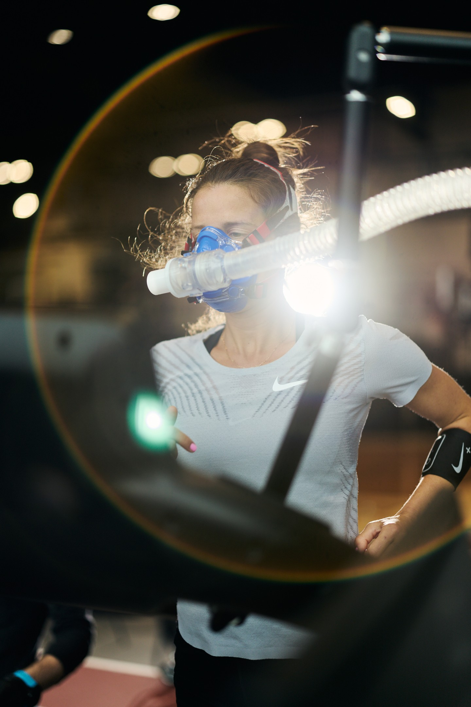
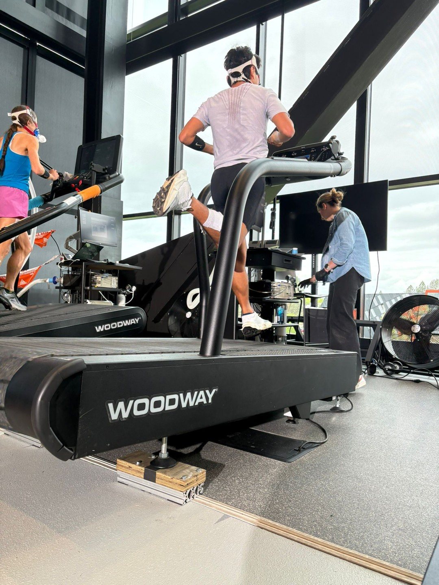
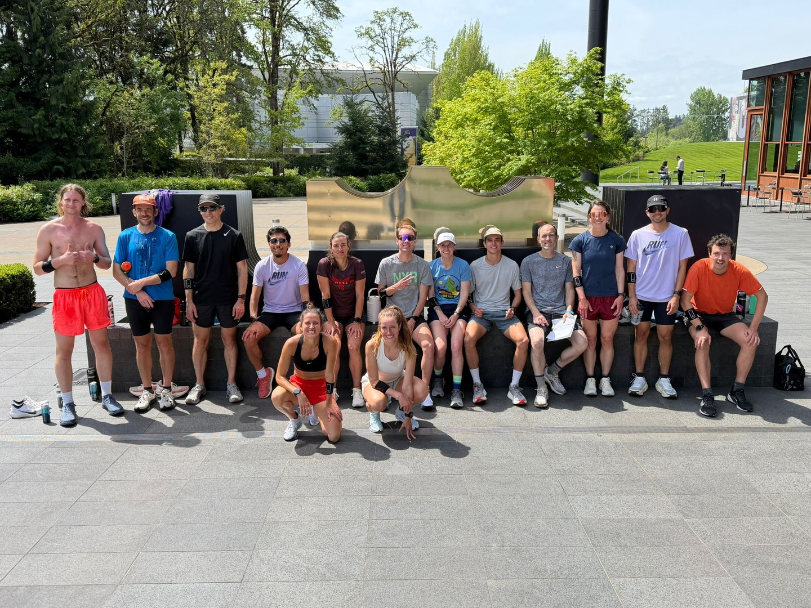

The gravity of the situation is — that pace has no place in mountains. Vertical meters is the metric of choice for trail runners. This week we mapped what it takes to sustain exercise intensity across declined −5% and flat, and inclined gradients of 5%, and 15% — to understand how the body responds when gravity enters the equation.
Each athlete completed a protocol called Speed × Grade to determine lactate threshold at four different gradients spanning trail terrain: −5%, 0%, +5%, and +15%.
Each grade had 5 progressively faster stages. Lactate was measured at the end of each stage. The researcher was looking for a small but meaningful rise in blood lactate, indicating the athlete is now requiring a shift in energy demand and transitioning from moderate to heavy intensity exercise.
At +15% threshold pace, the team would cover the vertical gain of UTMB (9,600m) in ~9 hours of sustained climbing.
The cost of gravity: athletes lose nearly half their threshold speed at 15% grade. Every +1% of incline costs roughly 3% of threshold speed.
The asymmetry: Gravity takes more than it returns. Our study shows that a +5% gradient costs more than a −5% gradient gives back. Eccentric braking forces and neuromuscular control cap how much “free speed” the body can convert on the downhill.

After Speed × Grade was complete, each athlete performed a maximal running test to failure — at none other than +15% gradient. The steepest grade. The one that exposed the largest drop in threshold speed. Now pushed to absolute exhaustion.
Starting at an individualized speed (based on each athlete’s +15% LT), speed increased incrementally until volitional exhaustion. Peak oxygen consumption and time to exhaustion were recorded.
The variability: Gas Exchange Threshold ranged from 47% to 87% of VO2max across the group. Some athletes can access nearly their entire aerobic engine before crossing the first metabolic boundary. Others hit it at less than half capacity. This spread may be one of the keys to understanding physiological resilience.
Groups matched at baseline — clean slate for crossover comparison
Out on the LeBron James Innovation Center ramp — which also just happens to be a 15% gradient — athletes ran at a speed associated with maximal oxygen consumption for as many repetitions as possible.
Repeated efforts at VO2max speed up a 15% ramp until failure. Total repetitions completed quantifies vertical field work capacity — how much high-intensity vertical work the athlete can sustain in a real-world setting.
Total mechanical work done across 15 reps at VO2max on a 15% ramp. This is the edge of capacity — not how fast, but how much.

Week 2 brought the first structured wear test feedback sessions. Four Farm Team athletes (2M, 2F) debriefed on two prototype garments after running in them on trails and roads.
Compression was appreciated for quads but waistband height and groin area caused discomfort, requiring frequent adjustments.
Pockets were functional but shallow pocket perceived as less secure. Deeper pocket appreciated for holding gels during runs.
Increase waistband height, improve groin fit for mobility, deepen pockets, and test in hotter conditions for thermal regulation assessment.
Described as “sleepwear comfortable” with excellent moisture wicking. Did not pool sweat, sag, or hold water even during intense activity.
Maintained consistent temperature throughout runs. Unique seam placement minimized chafing. Roomy sleeves praised for unrestricted movement.
Athletes expressed worry about UV exposure through the fabric on long trail runs in desert/exposed conditions.
A majority of athletes doing the Speed × Grade treadmill test wore either Kiger 10 or Picklejuice. Initial athlete voice and ongoing feedback will be collected via the Move37 app.